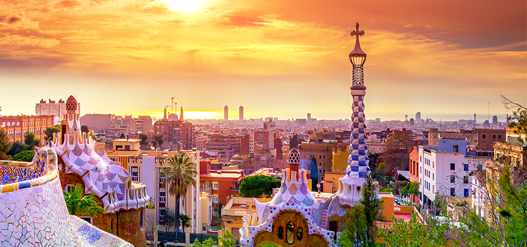
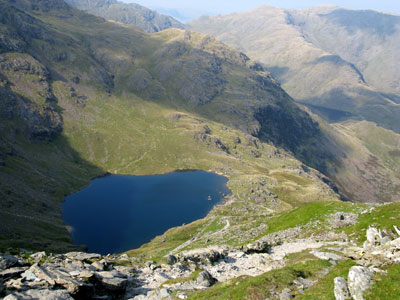
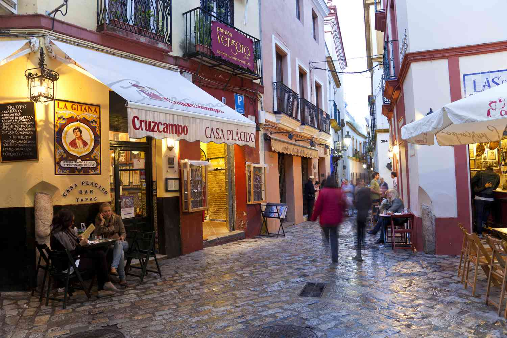

-
Acapulco
A west coast city of Mexico famous for its glamour in the 1960s. Elvis cliff diving and the great train robbers getaway being two of its most iconic moments in contemporary pop culture. Unfortunately, recent years have seen the city suffer from violence related to drugs and poverty.
-

Barcelona
A city full of ideas. In the short time I spent here the work of Antoni Gaudi left a lasting impression. He designed buildings combining cutting edge technology with extraordinary creativity. Some major works are Parque Güell; Palacio Güell; Casa Mila; the Nativity façade and Crypt of La Sagrada Familia.
-

Brighton
A university city on the South coast of England. I live here in a converted diamond factory built after the First World War by one of the Oppenheimers. Surrounded by the South Downs national park and the English channel, there is a lot of nature nearby.
The city is a bustling mix of boutique shopping in the South Lanes, pubs and restaurants in the North Laine, and seaside fun on the pier.
-

Cadiz
A port city in the Southeast of Spain. A tucked away town on a spit of land surrounded by sea. I spent a year in a 7th floor flat looking over the sea and long sandy beach. The swimming was good but I found the Andalsian accent difficult to adjust to after living in Mexico.
-
Cuckmere Valley
The most beautiful corner of Sussex (for me!). The river Cuckmere meanders down past Friston forest to flow into the sea between the Seven Sisters and Seaford Head. A tranquil retreat for birds, sealife and humans alike.
-
The Great Barrier Reef
An enchanting undersea world. I worked for around 3 months on a live aboard dive boat that travelled between three reefs (Hastings, Saxon and Norman) about 70kms off the coast of Cairns in the North-East of Australia. The diversity, beauty and numnber of creatures on those reefs was a constant joy.
-
Greenwich
An area of South-East London on The Thames. In years gone by Greenwich was the headquaters of the Brtish Navy and was a place of great wealth and power. The park here is my favourite in London and I lived next to it for several years while in London.
-
Hastings
A fishing town on the South-East coast of England where I grew up. The old town (pictured) is full of interesting buildings, stories and pubs. The town has its difficulties but was a great place to explore in my youth.
-

Mexico City
A huge city nestled at altitude in central Mexico. I lived there for about three years mostly in Roma Norte a central district - I often wish I could pop round the corner to Tacos Frontera for some Al Pastor.
-
Monkey Mia
On Australia's more remote West coast is Monkey Kia. A small town in the Shark bay national park. The beautiful waters are home to bottlenosed dolphins, dugongs and the Ningaloo reef, a large inshore reef.
-

The Old man of Coniston
While living in the Lake District for a year, my favourite walk was up the Old man of Coniston. A hill to the North of Coniston waters, its summit provides panoramic views all the way to the Irish sea.
-
Perth
One of the most remote cities on earth. I spent a couple of months over a Christmas here. The people were welcoming, the beaches were sandy and the beer was cold!
-
Reykjavik
The capital of Iceland where the majority of Icelanders can be found. I visited in summer, staying with the family of my partner at that time. There were lovely people, surronded by a harsh yet beautiful landscape.
-
Riviera Maya
A costal area of the Carribean Coast of Mexico. The springbreak party town of Cancun is in the North but I spent three months a little further down in Playa Del Carmen. An area with a lot of Tourism but some marvellous nature - the beaches, the cenotes and Tulum being just a few.
-

Seville
A Southern Spanish city not far Cadiz. I spent about six months here. The city has many interesting streets squares with the famous orange trees all around.